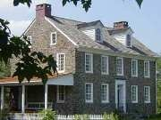

Quakertown

History

Quakertown, Pennsylvania is a town of approximately 9000 residents in the Northeast portion of Upper Bucks County, about 50 miles north of Philadelphia. The Borough encompasses approximately two square miles and has over 21 miles of roads.
The settlement of the "Great Swamp" as members of the Society of Friends originally knew it, began in the early years of the eighteenth century. Great Swamp, also referred to as Richland Centre, was in the middle of Richland Township and at the juncture of roads leading to Philadelphia, the Lehigh Valley, Pottstown, and Newtown. During our country's fight for independence, the Liberty Bell was concealed here, behind what is now known as Liberty Hall, on its way to be hidden in Allentown.
In 1801, the settlement officially became known as Quakertown and the first post office bearing its name was established in 1803.
As a crossroad village with a tavern, it soon became a stopover for stagecoaches and commercial traffic between Allentown and Philadelphia. Although it was the core of an extensive community of Welsh and German farmers, the village center remained quite small until the mid-nineteenth century. In 1820, Quakertown contained approximately twelve dwellings.
Although the Borough of Quakertown was not "affirmed" until February of 1855, the first Burgess, (elected official) was elected in 1854. At that time, the village contained only sixty-two dwellings. The construction of the North Pennsylvania Railroad in 1855 gave a great impetus to growth in the area. By 1880, the population of Quakertown was nearly 1,800.
The combination of the railroad and national economic expansion following the Civil War changed Quakertown from a tiny village to a bustling commercial center. Local industry included the manufacture of cigars, boots, shoes, tools, harnesses, wheel spokes, and stoves.

Quakertown generated its own electrical power until 1969. Although the power plant was abandoned, Quakertown kept control of the distribution lines within the Borough and began to buy power at a bulk rate and resell it. In addition to maintaining the electric system, Quakertown operates their own water and sewer systems. This tradition of enterprise and hard work has been carried on down through the years to present-day Quakertown. It is the charming blend of the past and the present, old traditions and progressive spirit which makes Quakertown a pleasant place to live and work.